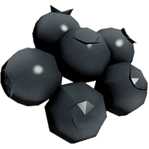
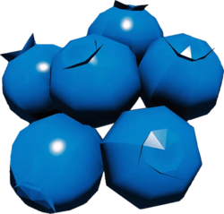
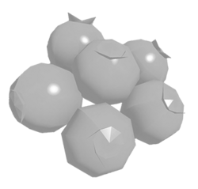
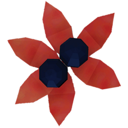
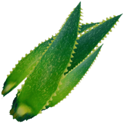

Flora se refiere a las diversas plantas y hongos que se pueden encontrar en El Bosque. Algunas especies se pueden encontrar en la Guía de Naturaleza en las secciones de Flora. Las plantas se dividen en dos grupos: la vegetación genérica, que está formada por la flora general que se encuentra en la Península, y las plantas de consumo, que son las comestibles, medicinales, y organismos venenosos que crecen en el medio ambiente.
| Flores | Venenosas — Curativas | Descripción |
|---|---|---|
|  Moras | Curativas (Sed/Hambre) | Las moras se pueden encontrar por toda la península... |
|  Arándanos | Curativas | Los arándanos se pueden recolectar de los arbustos de arándanos... |
|  Bayas de Nieve | Venenosas | Las bayas de nieve son venenosas y dañarán la salud... |
|  Twinberries | Venenosas | Twinberries son venenosas y dañarán la salud... |
|  Aloe | Curativas | El aloe se puede usar para elaborar hierbas medicinales... |